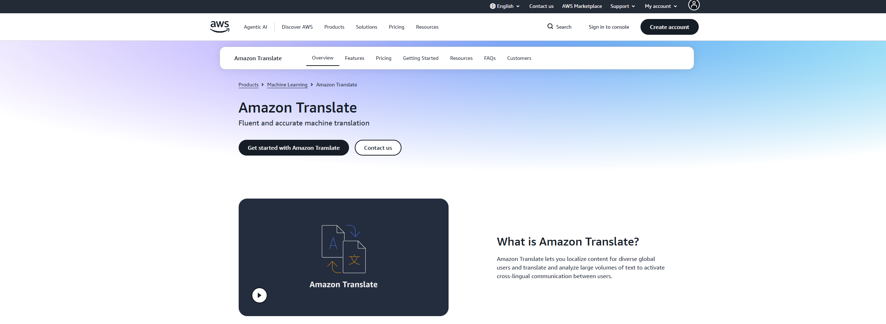
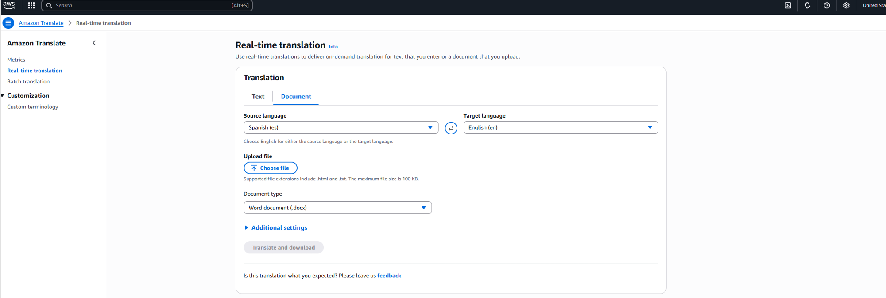
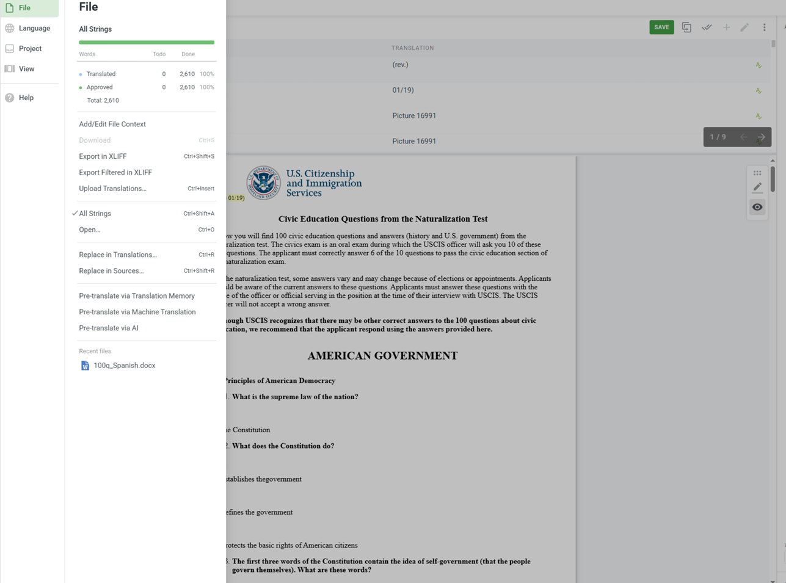

Translation, Localization & Accessibility
Translation Documents: Government & Literary Texts Using Cloud Services
Produced two professional translations from English to Spanish using cloud translation services augmented by post-editing, terminology management, and cultural adaptation.
Responsibilities
Translation Quality Evaluation
Evaluated cloud translation service quality for government and literary text types.
Terminology Management
Developed domain-specific terminology glossaries to support consistent Spanish translation.
Post-Editing
Performed full post-editing on machine translation output to improve accuracy, readability, and tone.
Plain Language Adaptation
Applied plain language and cultural adaptation for the government preparedness document.
Literary Voice Preservation
Maintained literary voice, stylistic register, idiomatic meaning, and narrative flow for the novel chapter.
Workflow Documentation
Documented the cloud translation, post-editing, glossary, and review workflow.

Overview
Comparing cloud-assisted translation across technical and literary texts
This project produced two completed translations using a cloud-assisted translation workflow: a FEMA public emergency preparedness guide translated from English to Spanish for Spanish-speaking communities in Colorado, and Chapter 4 of a contemporary English-language novel translated from English to Spanish as a literary translation exercise.
Together, the two documents represented opposite ends of the translation spectrum: technical plainness versus literary expressiveness.
The project demonstrated how cloud translation services must be applied differently depending on audience, genre, accessibility needs, terminology, and voice.
Problem & Goals
Balancing accuracy, accessibility, and voice
The government translation challenge was ensuring that FEMA's regulatory and procedural language was rendered in plain, accessible Spanish for readers with varying literacy levels.
The goal was not to produce a literal word-for-word transfer that preserved bureaucratic complexity, but to create a translation that improved clarity and public usability.
The literary translation challenge was the opposite: preserving idiomatic expression, narrative voice, and cultural resonance that machine translation systems often flatten.
Government Clarity
Translate procedural information into accessible Spanish for public-sector use.
Terminology Accuracy
Verify emergency preparedness terminology against official Spanish-language references.
Literary Voice
Preserve tone, register, dialogue, and cultural nuance in the novel chapter.
Replicable Workflow
Document what cloud translation tools could and could not do reliably.

My Role
Translating, post-editing, and documenting the workflow
I served as translator and post-editor for both documents, using cloud translation output as a starting point and revising the text for accuracy, tone, accessibility, and audience fit.
For the government document, I developed a Spanish plain language checklist adapted from federal plain writing guidelines.
For the literary chapter, I maintained a style notes document tracking voice decisions, idiomatic choices, and cultural equivalences that deviated from the machine output.
I documented the full workflow as a translatable methodology for future translation assignments.
Discovery & Constraints
Evaluating source texts before translation
Source text evaluation preceded translation for both documents.
The FEMA guide contained specialized terminology, including emergency shelter categories, NIMS terminology, and FEMA program names, which required a verified Spanish-language glossary cross-referenced against official FEMA Spanish publications.
The novel chapter contained colloquial American English, regional dialect markers, and stream-of-consciousness passages that cloud translation systems predictably mistranslated.
Key constraints included working without a professional translation memory database and meeting accessibility standards for the government document.
Information Architecture
Organizing translations, notes, and review documentation
Both translations were delivered as track-changes documents showing machine translation output, post-edit decisions, and translator notes.
The government document was accompanied by a terminology glossary with source terms, approved Spanish equivalents, and usage notes.
The government translation also included a plain language review checklist to support accessibility and readability.
The literary translation was accompanied by a translator's notes appendix documenting stylistic decisions section by section and explaining the rationale for departures from literal translation.

Requirements & Acceptance Criteria
Evaluating translation quality by audience and text type
The government document translation was evaluated against three criteria: terminological accuracy, plain language compliance, and formatting preservation.
Terminology was cross-referenced against official FEMA Spanish glossaries. Plain language was evaluated using a target reading level of Grade 6–8 in Spanish.
Formatting requirements included maintaining the original section structure, heading hierarchy, and call-out boxes.
The literary translation was evaluated on voice consistency, idiomatic naturalness, and fidelity to narrative meaning rather than surface-level word choice.
Analytics & Iteration
Refining translations through expert review
The government document was reviewed by a bilingual public health communicator for plain language and accessibility.
Feedback produced one revision cycle that simplified three procedural paragraphs and corrected two term equivalences where regional Spanish variation was relevant for the Colorado target audience.
The literary chapter was reviewed against the original by a Spanish-language literature instructor.
That feedback refined the handling of two extended dialogue passages and one recurring metaphor.
Outcomes & Next Steps
Delivering completed translations with post-editing documentation
Both final documents were delivered with complete post-editing documentation.
The government translation workflow was formatted as a reusable methodology guide for future public-sector translation projects.
The literary translation and translator's notes were submitted as a portfolio piece demonstrating the range and limits of cloud-assisted translation for non-technical text.
Delivered completed English-to-Spanish translation documents.
Created terminology, post-editing, and translator notes documentation.
Documented a reusable cloud-assisted translation workflow.
Next Steps
Next steps include expanding the government translation to the full FEMA guide and exploring CAT tool integration to build a translation memory for future assignments.
Future iterations could also compare additional cloud translation services and refine the post-editing checklist for different domains.
Learnings
This project strengthened my ability to evaluate machine translation output, manage terminology, and adapt content for accessibility, audience, and cultural context.
I also learned how differently cloud translation tools perform across technical public-sector content and expressive literary writing.